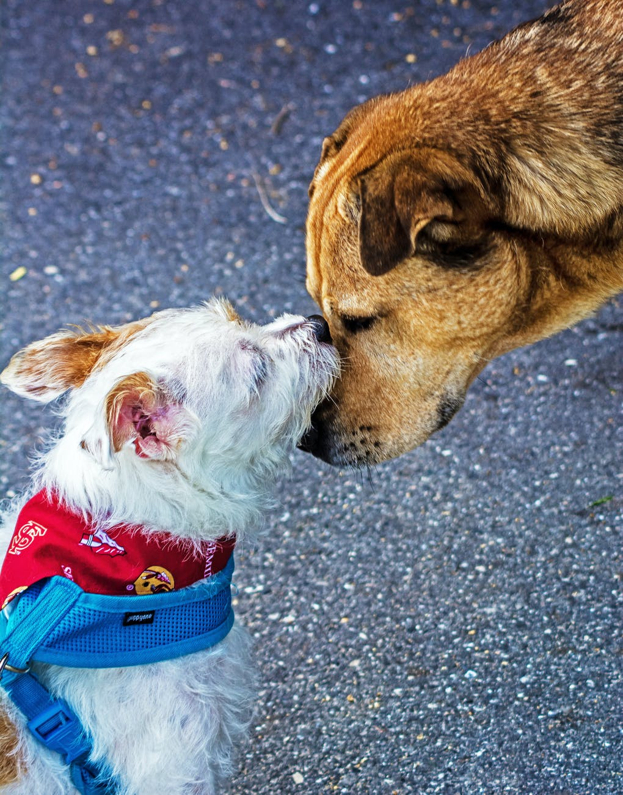

Friends on Floofbook
What Does it Mean to be Friends on Floofbook?
In many ways, a Floofbook Friend is the same as a real-life friend. These are the floofs that you spend time with and care about. These are the dogs that you visit at the dog-park and spend time with on walks. Floofbook allows for you to stay in contact with your floof-friends when your hooman isn't available to take you for a visit.
Perks of Being Friends on Floofbook
- View posts on eachothers timelines.
- Get frequent updates about your friends posts.
- Access to "friends-only" pictures and posts.
- Bark and wag on "friends only" posts.
- Stay in contact whenever you want to bark in messanger.